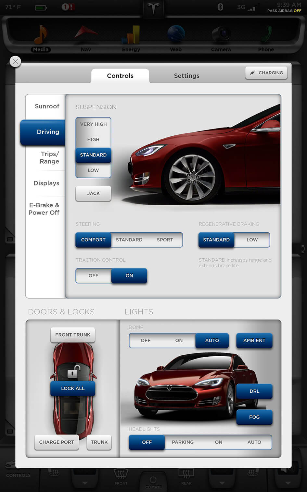

Tesla Model S EV
UI/UX Design
As UI/UX Design Intern at Tesla Motors, I was part of the software team on the Model S in-car touchscreen. I worked with the team of engineers to create a cohesive and visually appealing user interface that puts all of the car's functions into a stylish and accessible package.
The design aesthetic I initially established for the Model S makes the UI attractive as the car's design, while incorporating a unique visual language that is intuitive for all drivers independent of their technical knowledge.
Final Production Shots:


Early Prototype:
Much attention was paid to the context of the touchscreen. Because the user is driving, it was important that the screen's layout is intuitive and the buttons were easily accessible with one hand. Furthermore, the amount of user actions needed to achieve a goal needed to be minimal so as not to detract the user's attention from the road.
Due to the unprecedented size of the screen multiple apps could be displayed at once. The layout below illustrates this "stack" system: the 2 apps can be switched in their position, pinned in place, or removed when a new app is opened.
UI Assets:
I also designed early wireframes, vector-based UI assets, and icons for the 17-inch capacitive touchscreen: